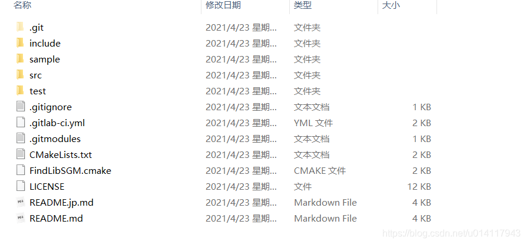
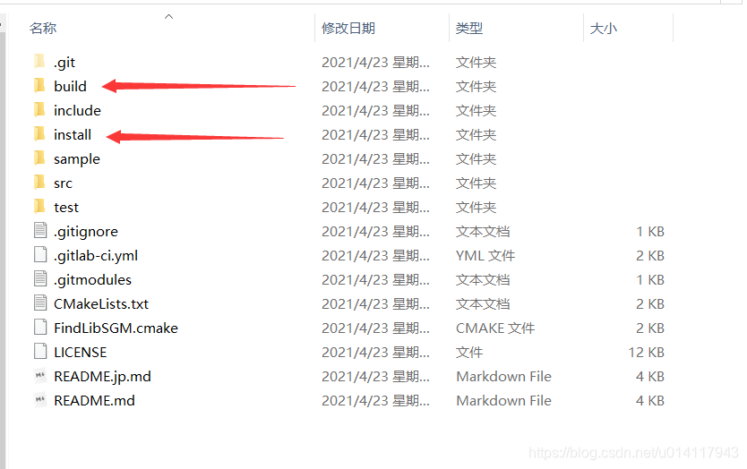
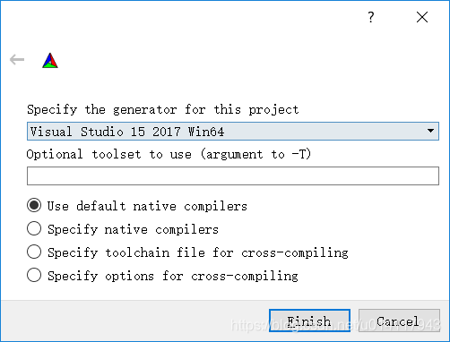
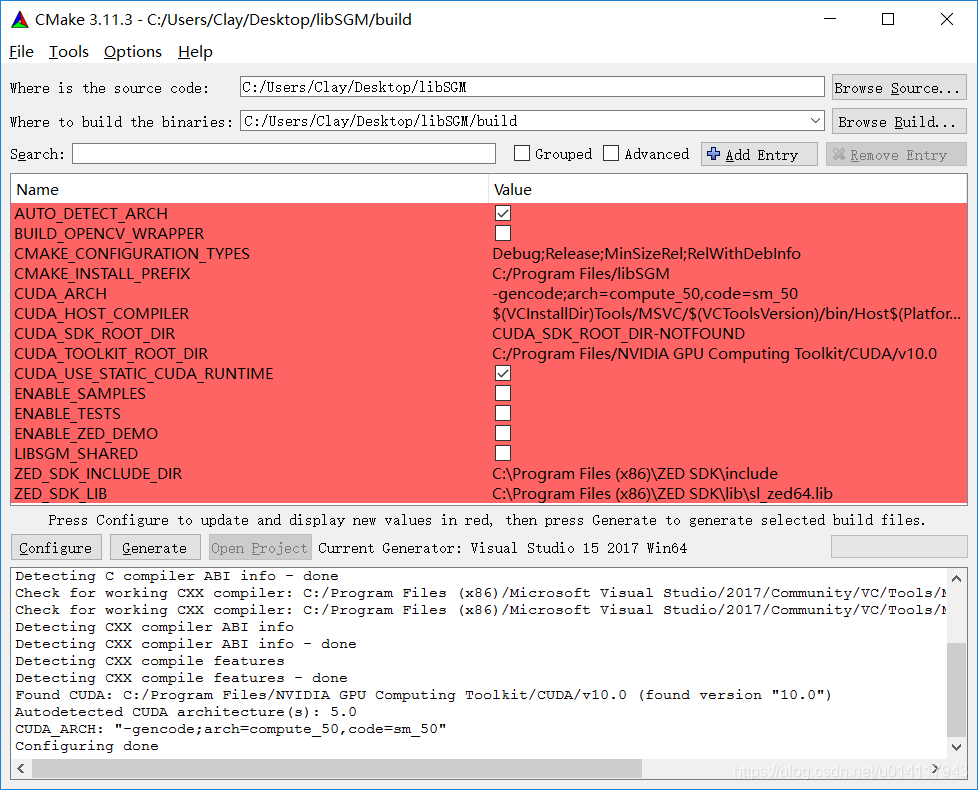
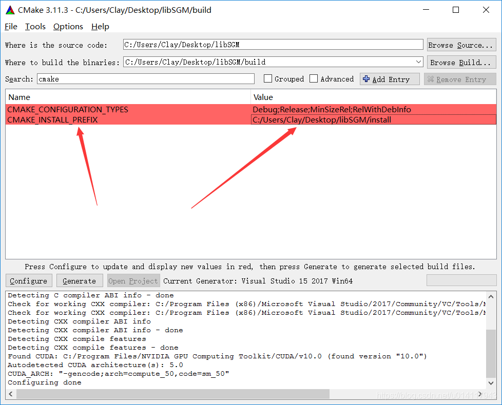
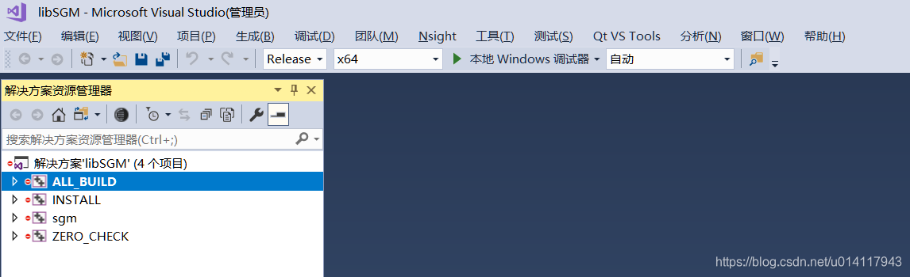
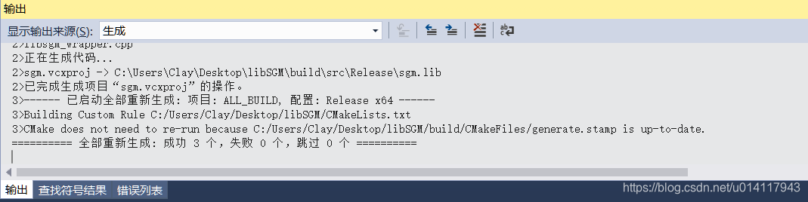
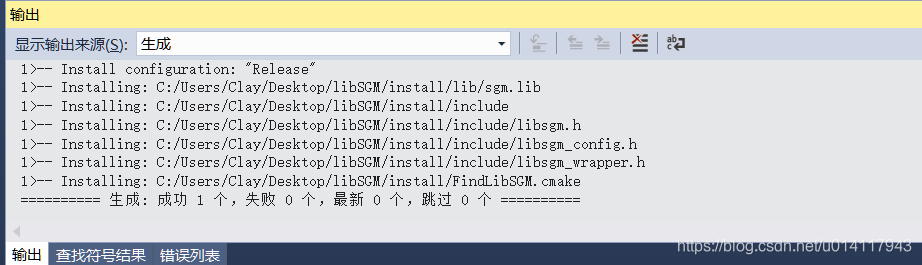
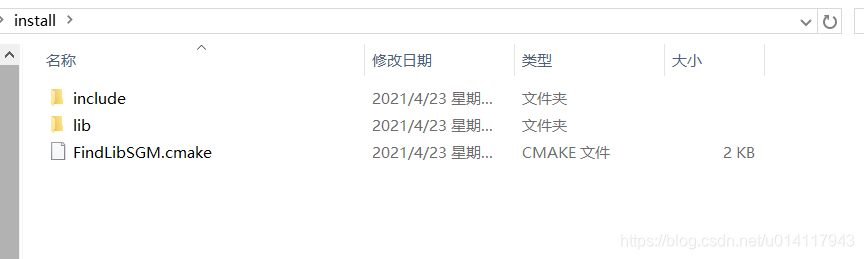
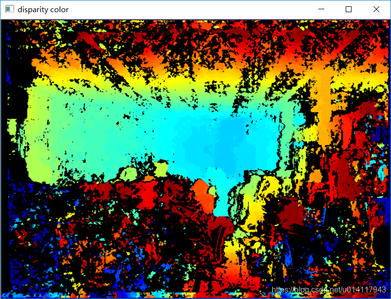

0. 原材料
libSGM开源库是一个使用CUDA对半全局匹配算法SGM的加速实现版本。
- 英伟达显卡（算力 >= 3.5）
- cuda环境（我的版本是cuda 10.0）
- OpenCV（版本 >= 3.0）
- Cmake（版本>=3.1）
1. 源码下载和编译
1.0 代码clone
开源库地址：
https://github.com/fixstars/libSGM
先把代码clone到本地来。

1.1 新建文件夹
建立build目录和install目录。

1.2 配置cmake
我在windows环境下，使用的cmake-gui，版本是3.11.3。
选择好最上边的源码路径和build路径。
然后点击Configure按钮，根据自己情况配置，我选择的vs2017 x64。

然后开始加载cmake相关的配置，加载完成如下：

修改一下CMAKE_INSTALL_PREFIX为刚刚建立的install路径。

然后再点击Configure按钮，生成项目。
然后使用vs打开该工程，我选择了Release x64的方案配置。
- 注意，用管理员权限打开vs，否则后边可能会出问题。

右键ALL_BUILD，选择生成，等待生成结束。

然后右键INSTALL，选择仅用于项目 - 仅生成INSTALL。

生成install结束后，install文件夹内容如下：

2. 调用
源码中附带了几个例程，可以按照作者的方法直接编译运行。
也可以在vs中自己配置环境（cuda和opencv），也可以。
3. 结果

随便搞了几个参数去跑，速度还是挺快的，毕竟上了gpu了。但是测试时发现，如果图片尺寸太大的话，会out of memory错误。所以我直接把图片resize了。